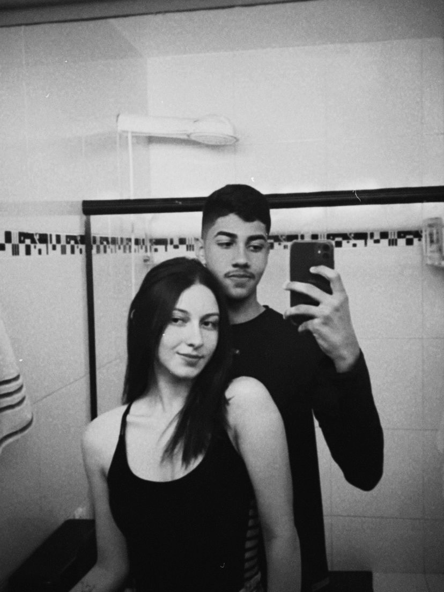
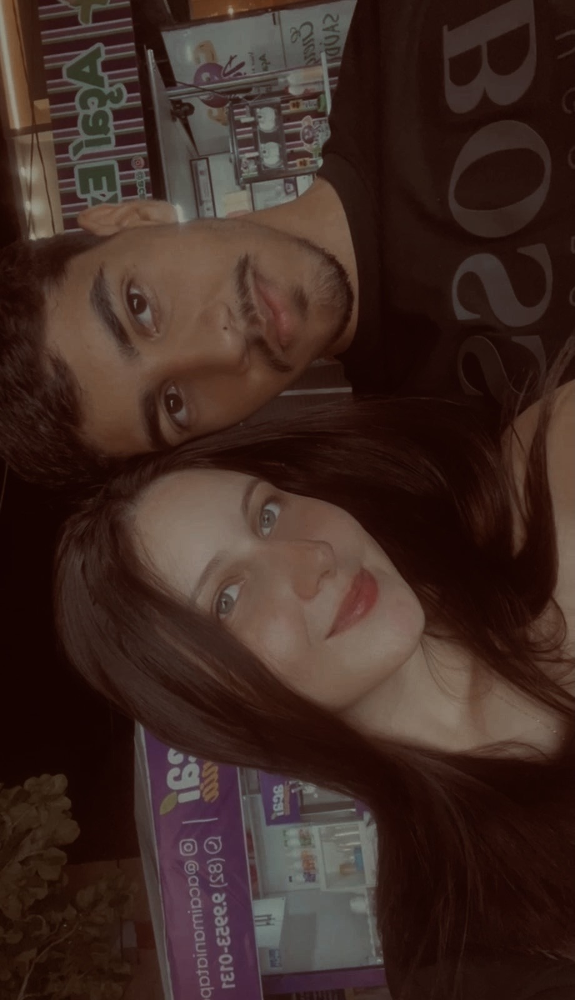
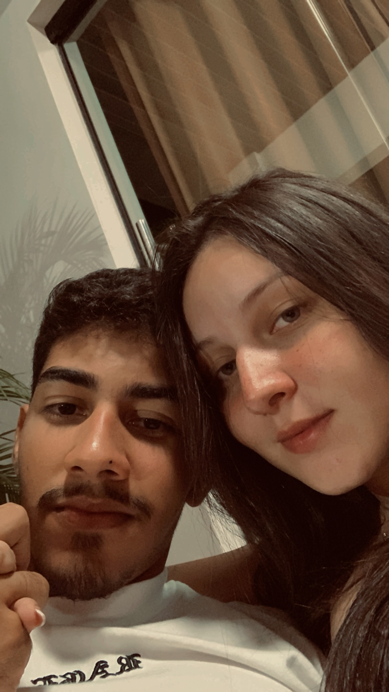
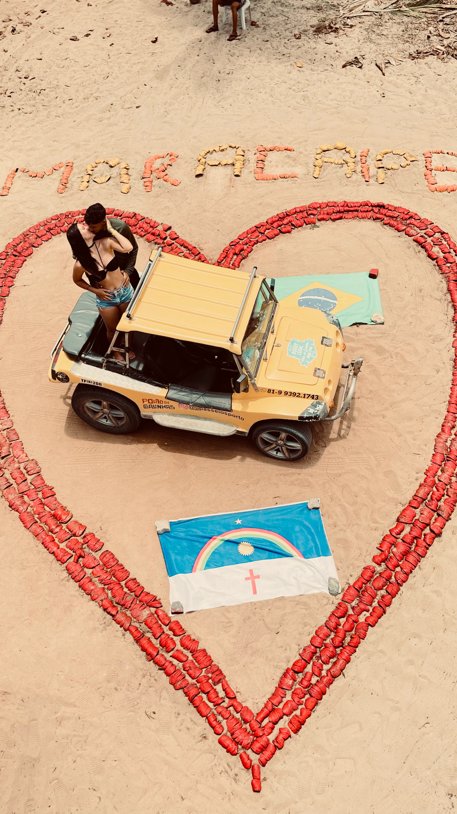
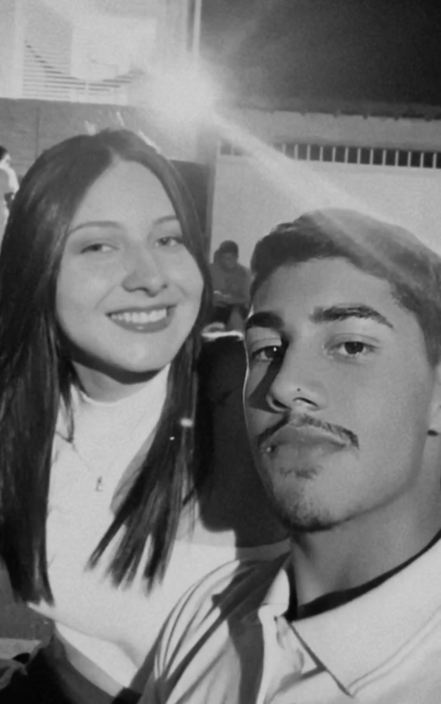
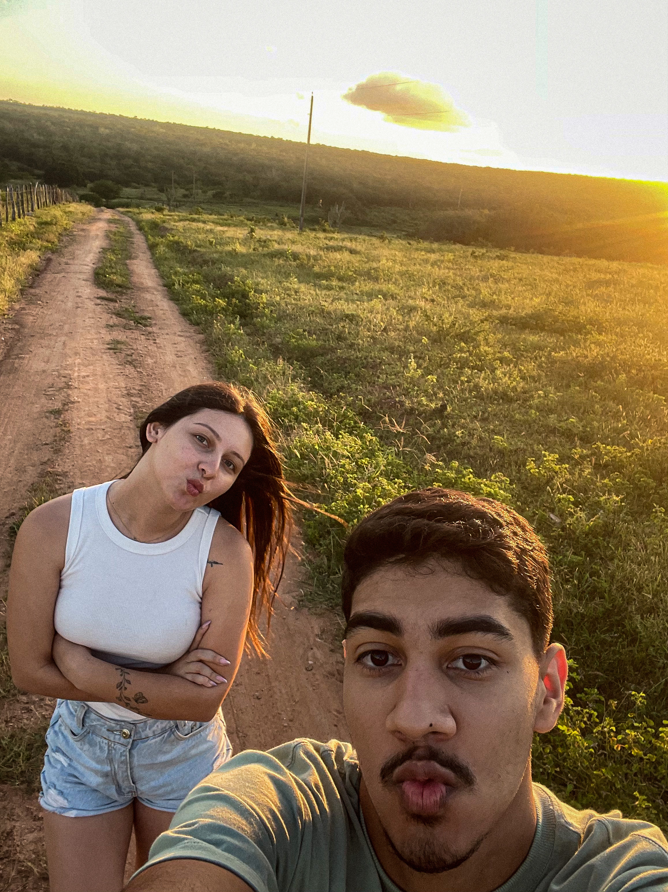

GOSTARIA DE SABER SE PODEMOS CONVERSAR?
(se quiser assistir harry potter também, não acharia ruim não kk)

clique no botão do YouTube antes de ler as frases..

Desculpe
Estou um pouco atrasado
Mas espero que ainda dê tempo
De dizer que andei errado,
E eu entendo !
Estou um pouco atrasado
Mas espero que ainda dê tempo
De dizer que andei errado,
E eu entendo !

As suas queixas tão justificáveis
E a falta que eu fiz nessa semana Coisas que pareceriam óbvias Até pra uma criança
E a falta que eu fiz nessa semana Coisas que pareceriam óbvias Até pra uma criança

Por onde andei
Enquanto você me procurava
E o que eu te dei
Foi muito pouco ou quase nada
E o que eu te dei
Foi muito pouco ou quase nada

E o que eu deixei
Algumas roupas penduradas
Será que eu sei
Que você é mesmo Tudo aquilo que me faltava
Será que eu sei
Que você é mesmo Tudo aquilo que me faltava

Amor, eu sinto a sua falta
E a falta é a morte da esperança
Como um dia que roubaram o seu carro
Deixou uma lembrança
E a falta é a morte da esperança
Como um dia que roubaram o seu carro
Deixou uma lembrança

Que a vida é mesmo
Coisa muito frágil
Uma bobagem, uma irrelevância
Diante da eternidade
Do amor de quem se ama
Do amor de quem se ama

Por onde andei
Enquanto você me procurava
E o que eu te dei
Foi muito pouco ou quase nada

E o que eu deixei
Algumas roupas penduradas
Será que eu sei
Que você é mesmo
Aquilo tudo que me faltava?